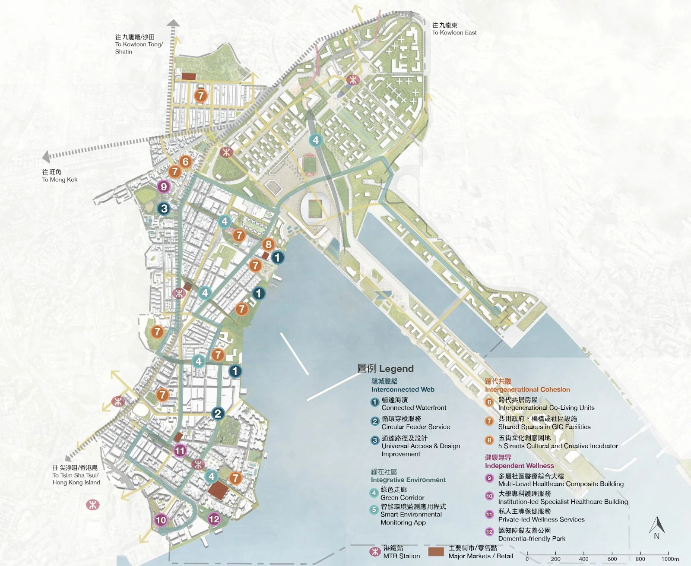
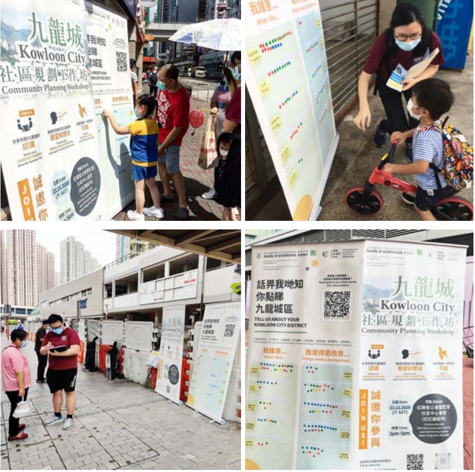
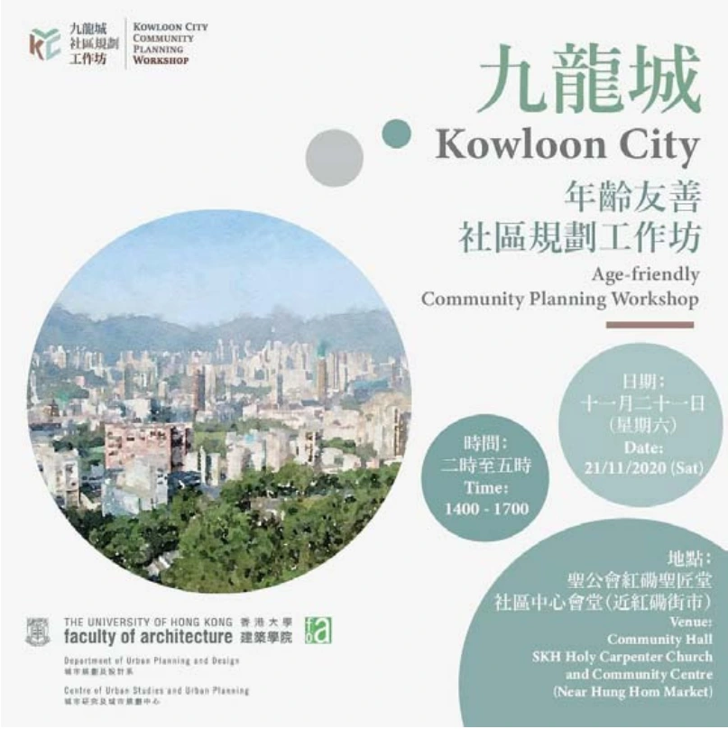
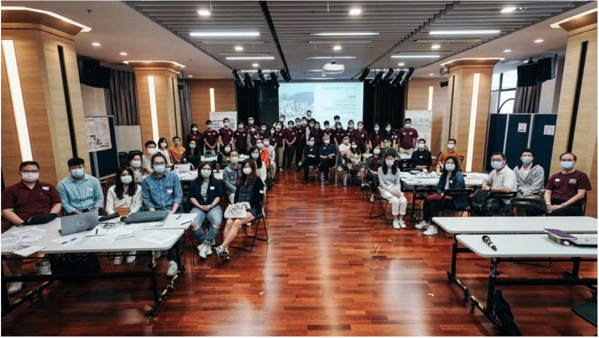

2020–2021 · Community planning studio · Hong Kong
An age-friendly Kowloon City
Community engagement, accessible streets and ageing in place.




1 / 4
How can a neighbourhood support ageing in place?
This HKU community planning studio connected everyday experience with spatial proposals. Street-level engagement, surveys and stakeholder interviews informed a community workshop held on 21 November 2020. The team used public feedback to refine twelve interventions addressing connected routes, inclusive environments, intergenerational spaces and wellbeing.
My contribution
Team member; final presentation drawings and workshop promotional board.
Project team
Cheng Chi Chiu David; Chu Wing Sing Don; Lee Ming Wai Vivian; Lei Shuyu Leslie; Tam Tsz Ho Cyrus; Tse Yi Lam Gloria; Wong Yui Hin Isaac; Ying Pui Yan Anson
HKU studio gallery